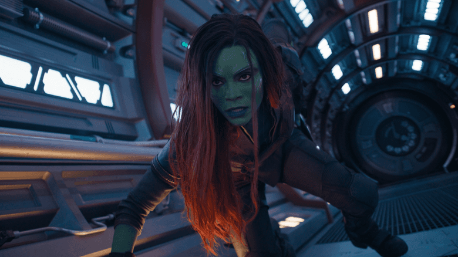
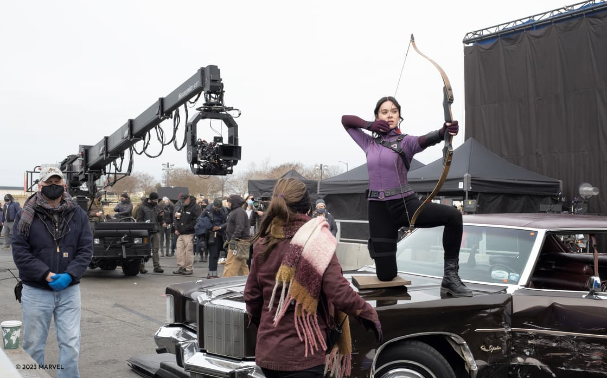

Zoe Saldaña on Gamora’s New ‘Spunk’ in ‘Guardians of the Galaxy Vol. 3’
“I do find this Gamora very exciting because she’s very independent and she’s wild and she’s different."
There’s one character who might be surprising for viewers to see in Marvel Studios’ Guardians of the Galaxy Vol. 3 — Gamora. And that’s because she died during the events of Avengers: Infinity War. “I’m surprised that Gamora is as much in this installment because what had happened in Avengers: Infinity War,” star Zoe Saldaña explains, who reprises the character for the fifth time. She assumed her role for this movie would be minimal, simply joining, “just to like come for two scenes and then bid everyone farewell.” Instead, Gamora ends up playing an important role throughout the movie as she not only assists the Guardians on their quest to save Rocket, but also helps Peter Quinn Quill (aka Star-Lord) close the book on their past relationship. In Avengers: Infinity War, Gamora is taken by her adoptive father, Thanos, to retrieve the Soul Stone so he can complete his Infinity Gauntlet. The only way to obtain this stone is by killing Gamora, which he does (and when Quill finds out what has happened, he lets his emotions get the better of him and allows Thanos to snap — a story for another day). But ing because she’s very independent and she’s wild and she’s different. There’s a spunk to her that Gamora never really had, and I hope audiences find that fresh.” Though she’s not part of the Guardians team, there was no way returning writer and director James Gunn was going to make another Guardians movie and not include the deadliest woman in the galaxy. “Zoe is such a great actor and allowing her to be the Gamora before she met the Guardians, she’s a little more stuck in that place,” he explains. Speaking of stuck, executive producer Sara Smith recognizes that Gamora is now dealing with more inner conflict than she ever has before. The Guardians are strangers to her. “I think the other thing that Zoe brings to it that’s so interesting is there’s a real conflict that character is struggling with,” Smith explains. “She’s sort of stuck with a group of people who have known her as someone else and it’s not a person she recognizes so to see the kind of nuance in Zoe’s performance and that struggle come through I think is in the whole Marvel Cinematic Universe.” “It’s one of the best written characters I’ve ever seen, and I love the arc that she goes through in this third installment,” he continues. “It will really flip people on their heads and defy their expectations as to how you should end a trilogy with two people who have been in love before.” So, while she might not be the same Gamora that audiences have come to know over the years, she’s still at her core Gamora and comes to the Guardians’ aid when they need her most. While it might be different than what she’s used to with the character, Saldaña loves the overall message of the movie and the part she played in it. “What makes James Gunn a special storyteller is that he finds genuine, universal, common emotions and common conflicts and he utilizes them, and he sets them on this universe type of tapestry and we’re all still able to relate to it cause we all feel sort of like underdogs sometimes,” She explains. “We all hurt when we are neglected or rejected or treated unfairly. We all can feel a great level of compassion for each other, so he creates this beautiful story with a universal kind of feelings, and you’re deeply moved. You’re just deeply moved and that’s what he did in this story, so I was very surprised that I was gonna cry as much as I did.”
Save the galaxy, again. Guardians of the Galaxy Vol. 3 is now playing exclusively in theaters.
CULTURE & LIFESTYLE Published May 15, 2023Behind The Scenes of Marvel Studios' 'Hawkeye' with Hailee Steinfeld
Read the exclusive excerpt from 'MARVEL STUDIOS’ HAWKEYE: THE OFFICIAL COLLECTOR SPECIAL' on-sale Tomorrow, May 16, 2023
A new hero emerged during Marvel Studios' Hawkeye, introducing the world to Kate Bishop as she translated her archery skills and appreciation for Clint Barton into becoming one of the MCU's newest stars. Now fans can go behind the scenes with the upcoming release of Marvel Studios’ Hawkeye: The Official Collector Special, hitting bookstores everywhere on May 16, 2023. Lavishly illustrated with stunning behind-the-scenes images, Jeremey Renner, Hailee Steinfeld, Florence Pugh, Vincent D’Onofrio and other members of the cast and crew, including the team responsible for the high-octane action sequences and the cast of Rogers: The Musical, reveal the secrets behind the creation of the hit Disney+ series. Pre-order Marvel Studios’ Hawkeye: The Official Collector Special at Amazon, Barnes & Noble, Books-A-Million, Indie Bound, or wherever books are sold. You can get as sneak peek of the book here with this exclusive excerpt of Hailee Steinfeld 's interview about the making of Hawkeye and becoming Kate Bishop!
HAILEE STEINFELD
From archery lessons to hand-to-hand combat, Hailee Steinfeld reveals how she had to do some straight shooting to bring fan favorite character Kate Bishop to life.

How much training did you have for the role?
Everything happened very quickly from the time that I got the call to the time that I showed up [on set] ready to shoot. I don’t know the exact amount of time, but it wasn’t a lot. I had a few archery lessons with an amazing coach in Los Angeles. The first handful of lessons were spent really just talking and being taught the mechanics of the bow: how to hold it and how to change the limbs. The whole technical side of things is what I was introduced to first, which I’m so grateful for, but at the time I was like, “dude, I really just want to shoot.” But I’m so thankful to know the in’s and out’s of it, because once all of that information is stored, you can place it in the back of your head and know that it’s there, and it becomes more and more second nature, after tons of repetition. I had a few sessions in L.A., then I went out to Atlanta, and I started working with the bow in a different way, and that was through stunt training.
First of all, a bow is a weapon without any arrows, and learning how to fight with just that was a whole thing in itself. Before I went out to Atlanta to shoot, I was also training in L.A. on the stunt side of things with my dad, who is a personal trainer. We spent months on all sorts of different styles of fighting and hand-to-hand combat. Once I had my first archery lesson, we started getting into exercises and circuits of training that would help me with those muscles because, let me tell you, if you’ve never shot a bow and arrow before, you are sore in places you never knew you could be sore the next day. It’s something that looks so beautiful and so effortless, but it is so hard. There were plenty of scenes where I was just holding it up for a while, and by the end of the take, my arm was shaking and my neck was hurting. It requires a lot more strength than it looks.
Does stunt training always come naturally to you?
I love that this role is very physical. I’ve always been into training my body and any sort of physical activity. I love that this job left me no excuse but to get to a place where I can be shown something – whether it was right before a take or months in advance – and I would be able to pick it up quickly. But that didn’t just happen, I definitely had to prep for that.

How much training did you have for the role?
I was so excited about the whole Super Hero costume element of joining the MCU. When it came time to have one of my first fittings, I didn’t really know what to expect, but I was very excited. I walked into the room and they had all the references up on the wall of the many versions of Kate’s Super Hero look. I was just so eager to find out what we were going to land on. The costume wasn’t going to [come into] play until the end of our shoot, so it was being built in L.A., and at one point during the middle of the shoot, it arrived in Atlanta. We had a fitting and a bunch of changes needed to be made, so they sent it back to L.A. Then there was this whole question of whether it was going to make it back in time, which put everybody under pressure. It was awesome to see the final product of her costume come into life, especially knowing that Kate has a version of this suit that she makes. The whole time we were calling it the homemade Hawkeye suit, and then it just became something so official and so clean and so, so good. I love it.
MOVIES Published May 11, 2023‘Guardians of the Galaxy Vol. 3’ Welcomes Visitors to Knowhere
There was an armory, an Orloni stand, the Boot of Jemiah, it was absolutely huge, and it felt like a real place and a real environment, and it was amazing to see that built.”

The Guardians of the Galaxy have a new home base — Knowhere. The location has long been a part of Marvel Studios’ Guardians of the Galaxy movies, with the group initially visiting in the first movie to meet The Collector, who built his collection in the severed head of a Celestial. Since then, Knowhere has seen some things (including an attack by Thanos to obtain the Reality Stone), and now the Guardians have stepped in to help rebuild it. After purchasing the place from The Collector, they now run the place turning it into their new headquarters. Though viewers have seen Knowhere multiple times through the Marvel Cinematic Universe, with Guardians of the Galaxy Vol. 3 it was time to update the location in more ways than one. For the new movie, Beth Mickle steps in as production designer and one of the first things she did was spend weeks going through the previous designs of Knowhere, becoming familiar with the Celestial head. “I knew that we were going to be revisiting Knowhere, which I loved from Guardians of the Galaxy Vol. 1,” She explains. “It’s got a little bit of a cyber punk look to it. It’s an old mining town that has a lot of light and a lot of color and a lot of grit to it and I really love that aesthetic. I really enjoyed going through all the material from that and I knew we were going to be revisiting that world in a very big way.” And not just in a big way on screen, but a big way for filming, too. Returning writer and director James Gunn wanted to use practical sets for Knowhere, which meant that the entire location had to be built from scratch. Mickle cites that was one of the reasons she was hired for the film, because she comes from an independent filmmaking background and was more than ready to jump into the project and create it from the ground up. “We don’t rely on blue screen, James really cares about everything being in camera which is just incredible and from a production and set design standpoint,” she continues. “That’s music to our ears. We really love creating physical scenery and our Knowhere Street was an exciting prospect.” Set decorator Rosemary Brandenburg was also eager to dive into a real location for Knowhere. “Sets are quite large, they’re really involved, and it just takes quite a bit to design everything and make it and have it be right around the actors. It’s quite an operation. People sometimes believe that it’s entirely in CGI, but we do a lot of real settings. James asked that this movie be particularly heavy on reality and real sets right around the actors and that’s what we’ve done.” Having things built in real life only adds to the physical (and sometimes, emotional) depth for the movie. “The scope of these films is often misunderstood, and people often think that what we’re doing is simply creating a little bit of an environment and then it’s completely extended around the actors,” she adds. “In reality we’re creating a giant situation right around the actors.” the real world, they still needed to be created from scratch, and as Makovsky adds, “you have to love every piece.” “Even making Chris Pratt’s Knowhere version of tee shirts and sweat pants. You can’t just say oh that one’s not as important as that one. It’s always hard for any costume designer to say I like one thing more than the other. Cause even the simpler things are almost harder to do than the more extravagant things and make it believable in this world.” If you come away from Guardians of the Galaxy Vol. 3 wanting to visit Knowhere in real life, the creative team behind the scenes has succeeded.
MOVIES Published May 5, 2023Maria Bakalova on Playing the Galaxy’s Best Dog in ‘Guardians of the Galaxy Vol. 3’
Good dog.

It’s about time the Guardians of the Galaxy got a dog, and they’ve got a good one in Cosmo. Though the pup wasn’t always intent on saving the galaxy — she was blasted into space from Earth and kinda forgotten about, until she was scooped up by The Collector and added to his collection — now it’s something she does best, having officially and formally joined the ranks alongside the other cosmic heroes. But just who could join the cast and play a perfect little pupper for Marvel Studios’ Guardians of the Galaxy Vol. 3? According to returning writer and director James Gunn, they did a very wide search for someone to take on Cosmo before landing on Oscar-nominated Maria Bakalova. Gunn couldn’t be happier with the outcome, noting that the actress has a “dog-like quality about her” — and that’s a good thing. “Maria is such a loving human being, and she wears her heart on her sleeve completely,” Gunn explains to Marvel.com. “Everything that comes out of Maria's mouth is 100% authentic. She does not censor herself, and she's just this really loving human being. She reminds me of a dog in that respect- she's just very much present, very much there, and is just a lot of fun to be around because she is like a puppy.” Bakalova jokes that she always thought of herself more cat-like because cats are so independent. But she’s taking it as “a huge compliment” that her dog-like qualities are now showing.